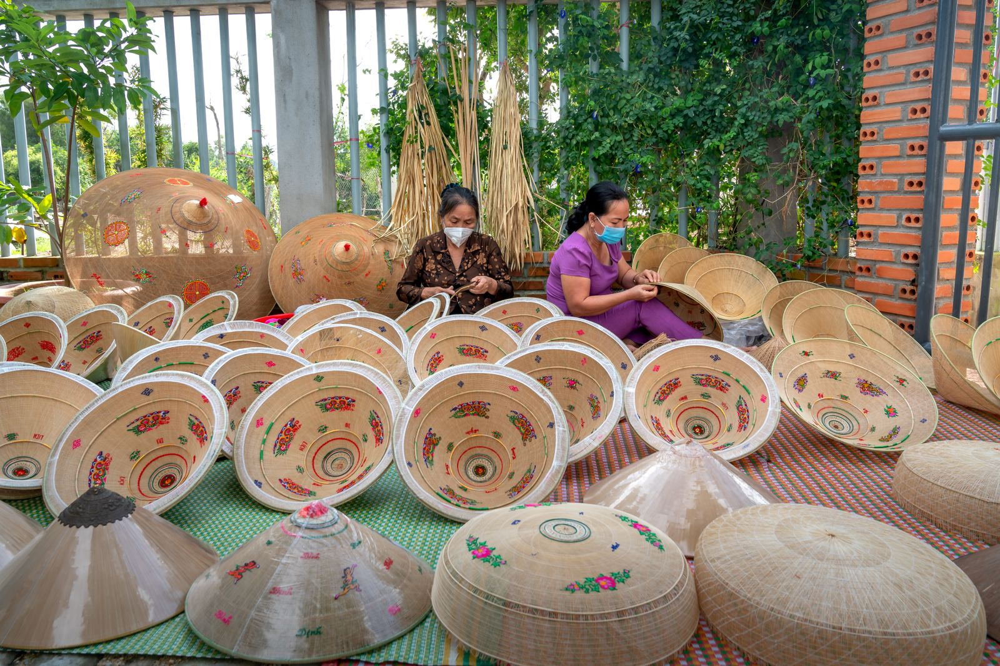

Craft over clutter
Kami menolak katalog yang membingungkan.
TOKOKRIYA

TokoKriya menghadirkan pilihan kerajinan tangan khas Sidoarjo, mulai dari kulit Tanggulangin, batik Jetis, hingga anyaman pandan dan bambu. Setiap karya mencerminkan keterampilan, ketekunan, dan tradisi para perajin lokal.
Kami ingin memudahkan Anda menemukan produk buatan tangan yang indah, berguna, dan dibuat dengan sepenuh hati, sekaligus mengenal lebih dekat kekayaan kriya lokal.
Kami menolak katalog yang membingungkan.
Deskripsi produk jelas, harga dalam Rupiah, tanpa trik tersembunyi.
Pengiriman cepat ke Surabaya Raya dan seluruh Indonesia (simulasi).
Situs ini dibuat untuk menunjukkan alur e-commerce yang utuh.